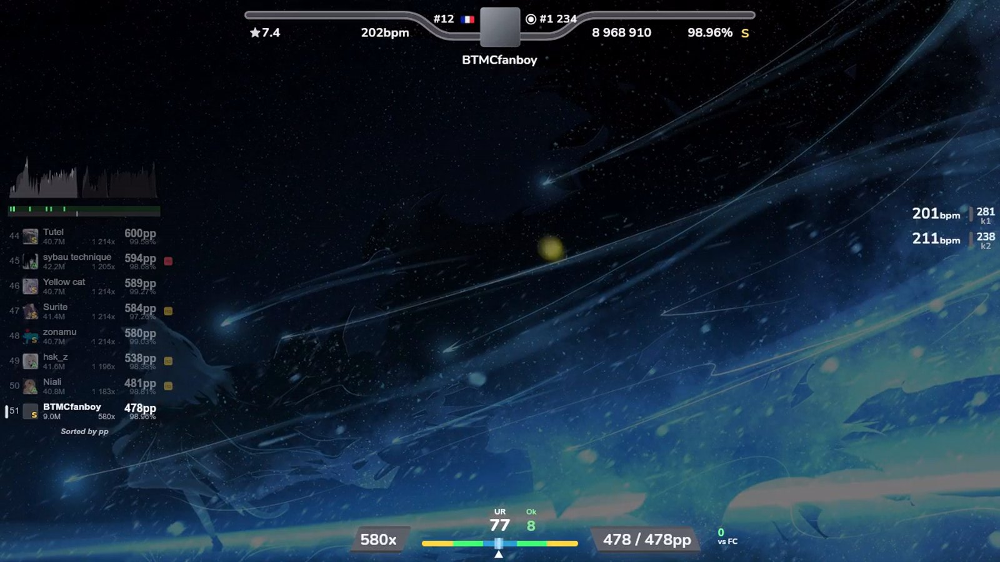
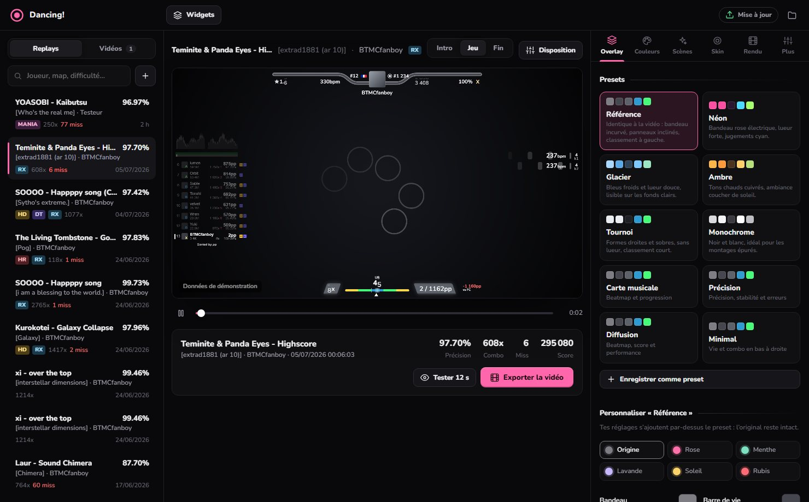
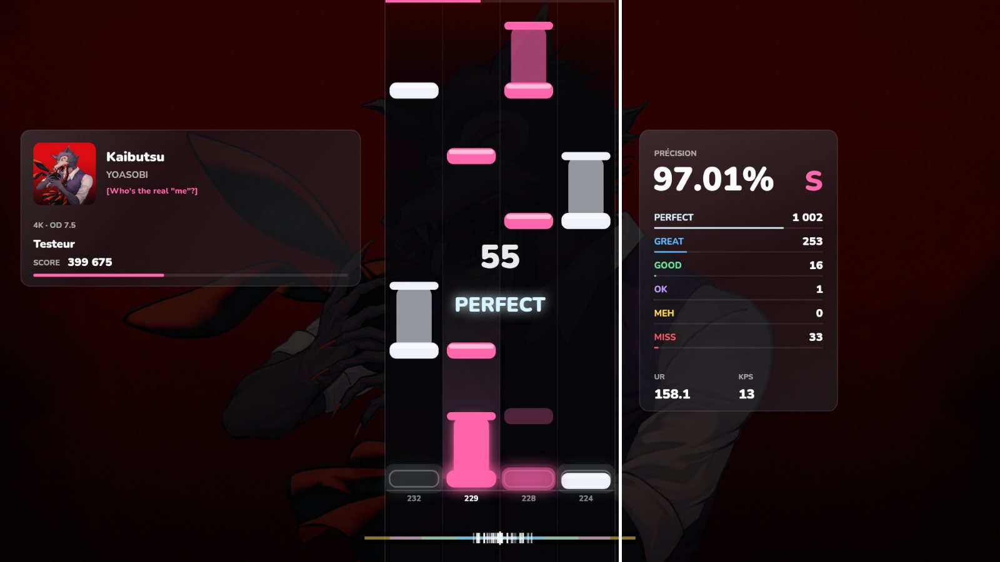
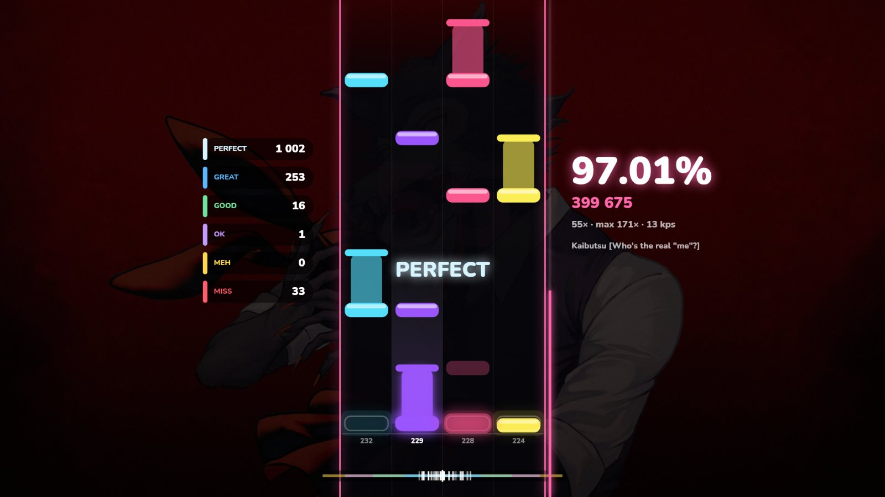
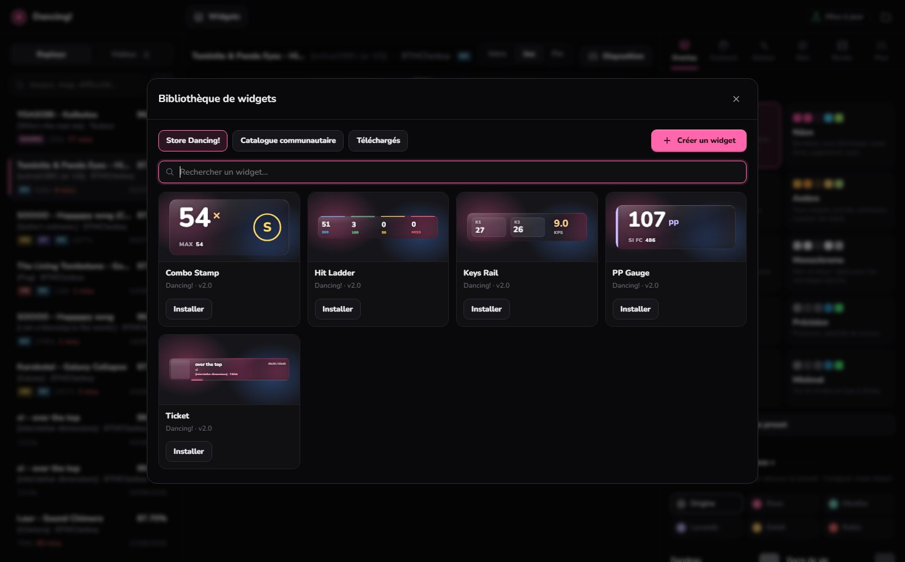
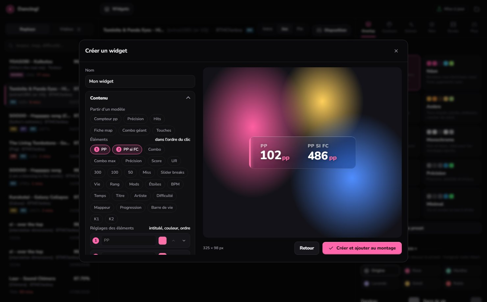
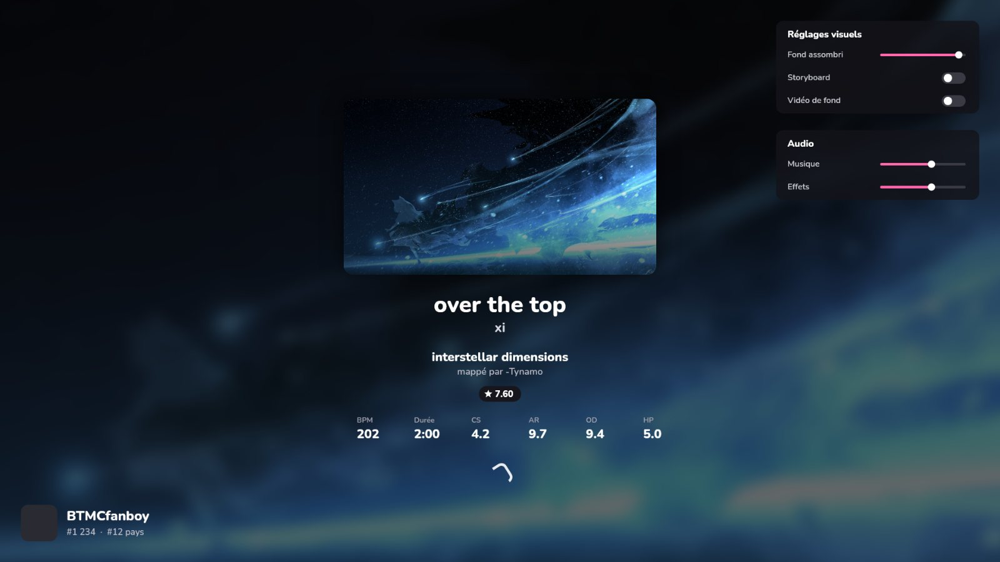
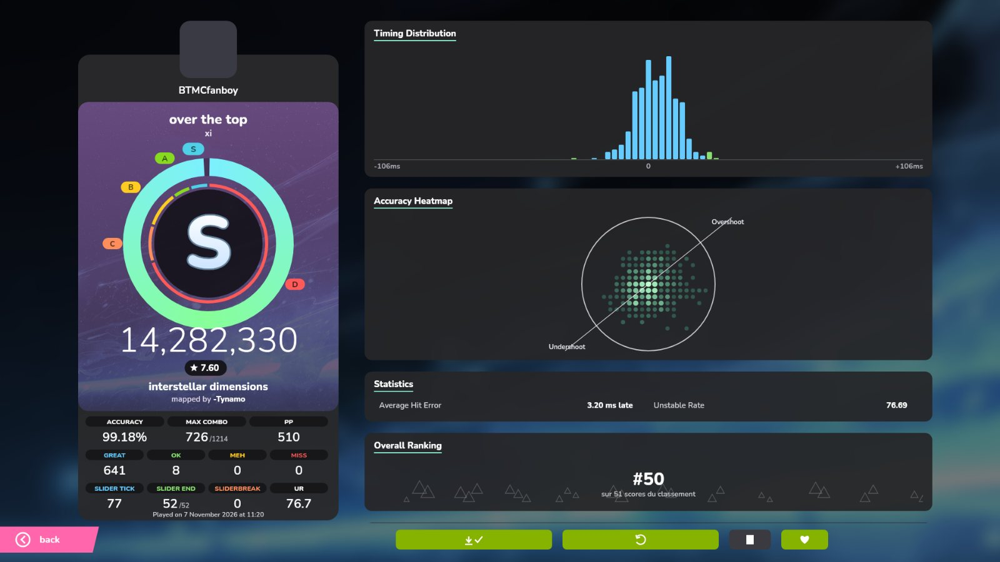
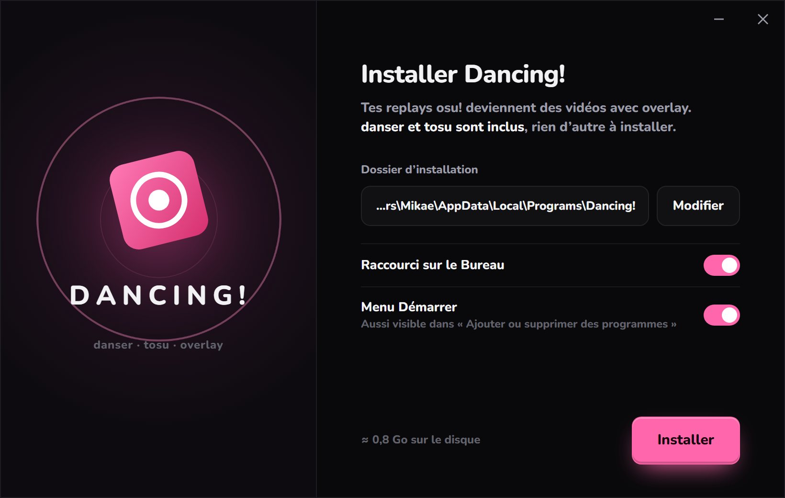

01
OVERLAYTOURNOI.
Bandeau de vie incurvé, combo et pp qui défilent, barre d’erreur, classement trié par pp. Le preset Référence reproduit l’overlay CPOL au pixel près.
Replays osu! → vidéo · Windows · danser & tosu inclus
Glisse un .osr, choisis ton overlay, exporte. Rendu danser, overlay façon tournoi, intro et résultats façon lazer… et même l’osu!mania.


Bandeau de vie incurvé, combo et pp qui défilent, barre d’erreur, classement trié par pp. Le preset Référence reproduit l’overlay CPOL au pixel près.


danser ne sait pas le faire : Dancing! dessine le mania lui-même. Notes longues, jugements, musique, et trois overlays rien que pour lui : Colonne, Arcade, Épuré.

Ticket, PP Gauge, Hit Ladder, Combo Stamp, Keys Rail : le jeu derrière est vraiment flouté, dans l’aperçu comme dans la vidéo. Et tout le catalogue tosu à portée de clic.

26 données, 5 fonds, polices, couleurs, grilles, animations. Tu cliques, le widget se construit sous tes yeux, et il marche dans tosu comme dans tes vidéos.


L’écran de chargement avant la map et les résultats à la fin, façon osu!lazer, avec la musique de la map en fond. Ta vidéo commence et se termine comme dans le jeu.

Un seul fichier. danser, tosu, ffmpeg et le moteur des widgets sont déjà dedans. À chaque mise à jour, tes réglages, tes replays et tes vidéos restent là.
Le jeu rendu par danser, flou de mouvement, jusqu’en 4K et 240 i/s.
Bandeau de vie, combo, pp, barre d’erreur et classement animés.
Chargement et écran de fin façon osu!lazer, avec la musique.
Moteur maison, trois overlays exclusifs, notes longues et musique.
Le catalogue officiel, téléchargé et placé en un clic.
Un vrai flou derrière les widgets, jusque dans la vidéo.
Fabrique tes widgets : données, style, police, animations.
Néon, Glacier, Ambre… ou la Référence, recolorée à ton goût.
Déplace et redimensionne chaque élément à la souris.
Teste 12 secondes avant de lancer le rendu complet.
Le même overlay dans OBS pendant que tu joues, via tosu.
danser et tosu se mettent à jour depuis l’app, sans rien perdre.
Un logiciel Windows qui prend un replay osu! (.osr) et en fait une vidéo prête à poster : le jeu rendu par danser, un overlay animé par-dessus, une intro et un écran de résultats.
Non. danser, tosu, ffmpeg et le moteur des widgets sont fournis avec Dancing!. Il te faut juste osu! et tes maps.
Oui, avec trois overlays exclusifs. Seules les maps standard jouées en mode mania (maps converties) ne sont pas encore prises en charge.
Non. L’installateur remplace le logiciel mais garde tes réglages, tes presets, tes replays importés et tes vidéos.
Oui, Windows prévient pour les programmes peu connus. Clique sur « Informations complémentaires », puis « Exécuter quand même ».
Non, c’est un projet indépendant, sans lien avec ppy. Il s’appuie sur danser et tosu, chacun sous sa propre licence.